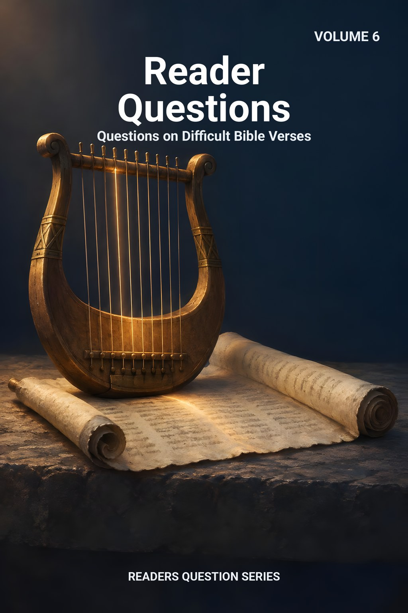
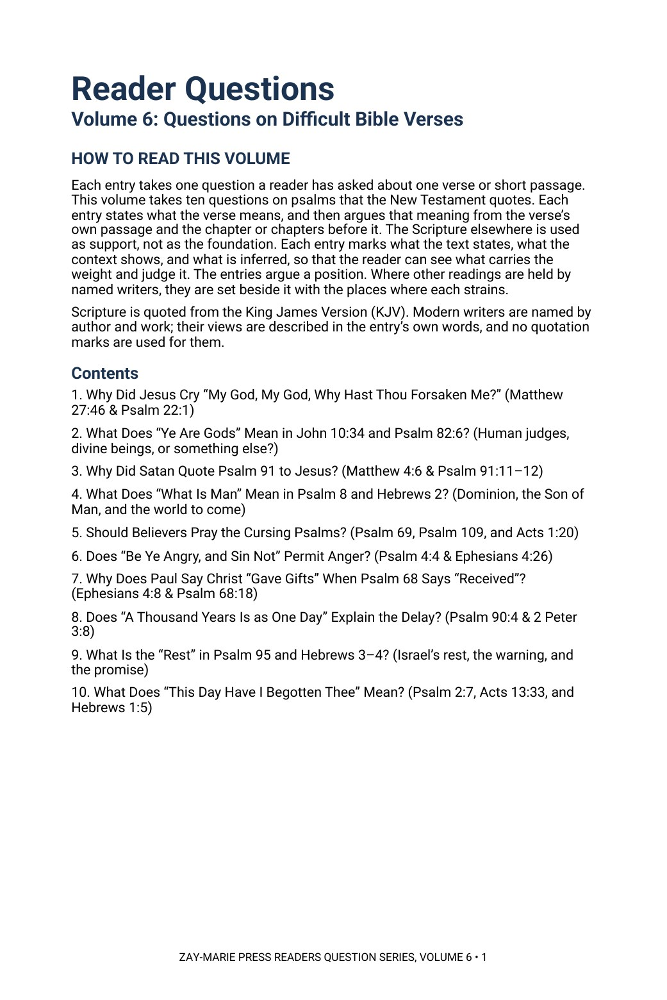
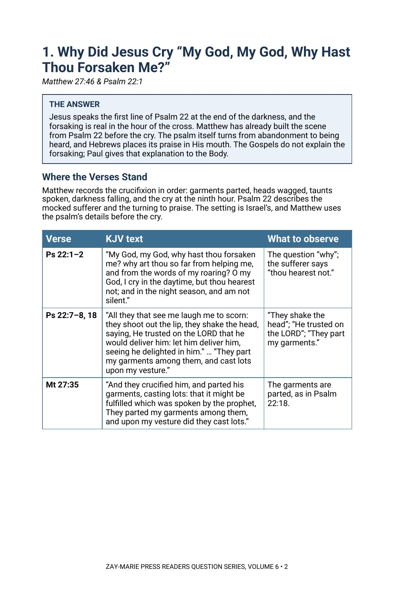

Reader Questions
Questions on Difficult Bible Verses
What does this psalm mean, and what does the New Testament do with it?
A reader asks about one psalm the New Testament quotes: why Jesus cried from Psalm 22, what “ye are gods” means, why Satan quoted Psalm 91, what the rest in Psalm 95 is. Each entry gives the answer first, then walks back through the psalm and the chapter that quotes it, and marks every point as stated, shown by the context or inferred.
The entries argue a position and say so. Where another reading is held, it is set beside the answer with the place where it strains.
One Psalm, Read Where It Is Quoted
Each entry answers one question about one psalm and the New Testament passage that quotes it. It begins with the verse, reads it in its own passage and in the chapter before it, and lets the rest of Scripture support what the context shows.
It is the sixth volume of the Readers Question Series. It is shorter than a Commentary Volume and takes one question at a time, and it is a different kind of book from a Digital Study, which reports what a passage says and leaves the question open. Scripture is quoted from the King James Version throughout.
Related Reading
Digital Studies
Study 24 — The Willful Sin Warning Reports the Hebrews 3 wilderness warning as written; entry 9 argues what the rest is.
Study 28 — The Warning of Hebrews 6:4–6 Reports Hebrews’ warnings as written; entry 9 argues the rest and the audience.
Study 82 — The Kinsman-Redeemer Reports Hebrews 2 as written; entry 4 argues one quotation.
Commentary Series
Gospel Commentary, Volume 2 — The Lord’s Ministry to Israel Argues the Lord’s ministry to Israel, John 10 among it.
Acts Commentary, Volume 1 — What the Twelve Were Told, and Did Argues Acts 1–8, the setting of Acts 1:20.
Typology Commentary, Volume 1 — Tabernacle & Temple Typology Argues the rent veil of Matthew 27:51.
Bible Book Companion Series
Bible Book Companion — Psalms Interprets the book through its key passages.
Bible Book Companion — Hebrews Interprets the book through its key passages.
Bible Book Companion — Acts Interprets the book through its key passages.
Ten Questions, Ten Psalms
The Cry on the Cross
Read Matthew 27:46 with Psalm 22 to see how the scene is built from the psalm and where the psalm turns.
“Ye Are Gods”
Set John 10:34–36 beside Psalm 82 and Exodus 22 to see who is addressed and what Jesus uses the line to answer.
The Temptation Quotation
Read Psalm 91:9–12 with Matthew 4:5–7 and Deuteronomy 6:16 to see what the quotation leaves out.
Dominion and the World to Come
Follow Psalm 8 into Hebrews 2:5–9 to see what the writer says is seen and not yet seen.
The Cursing Psalms
Read Psalm 69:25 and 109:8 in Acts 1:20 beside Romans 12:14, 19 to see where each is spoken and to whom.
Anger, Gifts, Years, Rest and Sonship
Trace Psalm 4:4, 68:18, 90:4, 95:7–11 and 2:7 into Ephesians, 2 Peter, Hebrews and Acts to see what each writer does with the line.
The Ten Questions, Answered in Brief
Open a question to read its short answer. Each question has its own page with the full entry, with the passage in its context, the evidence, the other readings and what the answer means, and the whole volume is a free PDF.
1. Why Did Jesus Cry “My God, My God, Why Hast Thou Forsaken Me?” (Matthew 27:46 & Psalm 22:1)
Jesus speaks the first line of Psalm 22 at the end of the darkness, and the forsaking is real in the hour of the cross. Matthew has already built the scene from Psalm 22 before the cry. The psalm itself turns from abandonment to being heard, and Hebrews places its praise in His mouth. The Gospels do not explain the forsaking; Paul gives that explanation to the Body.
Read the full answer → · or download the whole volume as a free PDF
2. What Does “Ye Are Gods” Mean in John 10:34 and Psalm 82:6? (Human judges, divine beings, or something else?)
Psalm 82 addresses Israel’s judges, who stand in God’s place and judge unjustly. Jesus quotes the line to answer a charge of blasphemy: if Scripture calls those who received God’s word “gods,” He whom the Father sanctified does not blaspheme in saying He is the Son of God. His claim rests on His works and His oneness with the Father.
Read the full answer → · or download the whole volume as a free PDF
3. Why Did Satan Quote Psalm 91 to Jesus? (Matthew 4:6 & Psalm 91:11–12)
Satan quotes Psalm 91 accurately but omits “in all thy ways,” turning a promise for the one who trusts God into a test of God. Jesus answers from Deuteronomy 6:16. The psalm is true; the use is false.
Read the full answer → · or download the whole volume as a free PDF
4. What Does “What Is Man” Mean in Psalm 8 and Hebrews 2? (Dominion, the Son of Man, and the world to come)
Psalm 8 marvels at man’s place over God’s works. Hebrews reads the psalm in light of the world to come: the rule is not yet seen, but Jesus is seen, made lower and crowned. Hebrews applies the psalm to the Son of man and to Israel’s hope.
Read the full answer → · or download the whole volume as a free PDF
5. Should Believers Pray the Cursing Psalms? (Psalm 69, Psalm 109, and Acts 1:20)
Psalm 69 and 109 are David’s prayers against enemies. Acts 1 quotes Psalm 69:25 and 109:8 in Israel’s setting. The Body is not told to pray these psalms as its own. They are Scripture, but their setting is Israel’s.
Read the full answer → · or download the whole volume as a free PDF
6. Does “Be Ye Angry, and Sin Not” Permit Anger? (Psalm 4:4 & Ephesians 4:26)
Psalm 4:4 commands trembling and reflection. Paul quotes it to the Body and warns against sinning in anger. The psalm’s command is inward; Paul’s warning is practical.
Read the full answer → · or download the whole volume as a free PDF
7. Why Does Paul Say Christ “Gave Gifts” When Psalm 68 Says “Received”? (Ephesians 4:8 & Psalm 68:18)
Psalm 68 speaks of the victor receiving gifts. Paul applies the victory to Christ and states the result for the Body: He gave gifts. The psalm’s movement is upward; Paul’s application is downward.
Read the full answer → · or download the whole volume as a free PDF
8. Does “A Thousand Years Is as One Day” Explain the Delay? (Psalm 90:4 & 2 Peter 3:8)
Psalm 90 speaks of God’s eternity. Peter quotes it to answer scoffers and to show that delay does not deny promise. The psalm does not give a formula; Peter uses it to correct a charge.
Read the full answer → · or download the whole volume as a free PDF
9. What Is the “Rest” in Psalm 95 and Hebrews 3–4? (Israel’s rest, the warning, and the promise)
Psalm 95 warns Israel not to repeat the wilderness refusal. Hebrews applies the warning to Hebrew believers and speaks of a rest still open. The rest is Israel’s promised rest; the warning is present.
Read the full answer → · or download the whole volume as a free PDF
10. What Does “This Day Have I Begotten Thee” Mean? (Psalm 2:7, Acts 13:33, and Hebrews 1:5)
Psalm 2 speaks of the king God sets on Zion. Acts 13 applies the line to the resurrection; Hebrews applies it to sonship. The psalm’s line is used in two settings without merging them.
Read the full answer → · or download the whole volume as a free PDF
Read the Word in Its Context
Psalm 22:1
“My God, my God, why hast thou forsaken me? why art thou so far from helping me, and from the words of my roaring?”
John 10:34
“Jesus answered them, Is it not written in your law, I said, Ye are gods?”
Psalm 91:11
“For he shall give his angels charge over thee, to keep thee in all thy ways.”
Hebrews 2:8–9
“Thou hast put all things in subjection under his feet. For in that he put all in subjection under him, he left nothing that is not put under him. But now we see not yet all things put under him. But we see Jesus, who was made a little lower than the angels for the suffering of death, crowned with glory and honour; that he by the grace of God should taste death for every man.”
Ephesians 4:8
“Wherefore he saith, When he ascended up on high, he led captivity captive, and gave gifts unto men.”
2 Peter 3:8
“But, beloved, be not ignorant of this one thing, that one day is with the Lord as a thousand years, and a thousand years as one day.”
Hebrews 4:9
“There remaineth therefore a rest to the people of God.”
Psalm 2:7
“I will declare the decree: the LORD hath said unto me, Thou art my Son; this day have I begotten thee.”
How Each Entry Works
Each entry marks what the text states, what the context shows, and what is inferred, so that the reader can see what carries the weight and judge it.
The entries argue a position, and the other readings are set beside it with the places where each strains.
Preview the Volume Before You Download
Click any page to enlarge it for reading.


How to Read This Volume
See the plan of every entry and the ten questions the volume answers.


The First Entry Opens
See an entry begin with its answer, then the question’s setting and the passages quoted in full from the King James Version.
Ten Answers in One Volume
26-Page Free Digital PDF
Cover and a fully numbered interior.
Ten Full Entries
Each question answered from the psalm’s own passage and the chapter that quotes it.
Marked Evidence
Every point marked as stated, shown by the context, or inferred.
KJV Tables
The passages quoted in full, beside what to observe in each.
Other Readings
The competing readings set beside the answer, with where each strains.
What It Means
What each answer means for the reader.
Related Reading
Commentaries and Bible Book Companions on the same passages.
Passages Quoted
An index of every passage printed in the volume, by entry.
Reader Questions, Volume 6
26-page digital PDF · Free · For personal use